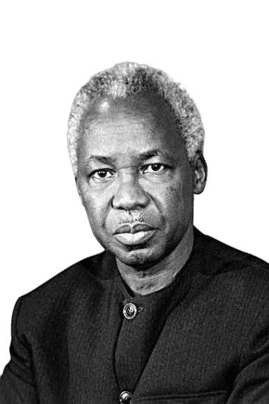

About Tabora Boys Secondary School
Tabora Boys Secondary School is a historic government boys' secondary school located in Tabora, Tanzania. The school has a long tradition of academic excellence, discipline, leadership and service to the nation.
Our History
Tabora Boys has a distinguished history dating back to the 1920s. During the colonial period, the institution was established as an important centre for educating and preparing African boys, including sons of chiefs and other prominent families.
Over the years, the school developed a strong reputation for academic achievement, discipline, leadership and intellectual development. Its influence extended beyond the classroom, contributing to the development of Tanzanian leaders and professionals.

Mwalimu Julius Kambarage Nyerere
One of the most distinguished former students associated with Tabora Boys is Mwalimu Julius Kambarage Nyerere, the first President of Tanzania and widely known as the Father of the Nation.
Nyerere joined Tabora Government School in 1937 after completing his primary education and completed his secondary studies in 1942. His education at Tabora formed an important part of his early academic development before he proceeded to Makerere College in Uganda.
His connection with the school remains an important part of Tabora Boys' educational heritage and its contribution to Tanzania's history.
Academic Identity
Tabora Boys continues to focus on academic development, discipline and the preparation of students for higher education and responsible citizenship. The school's educational tradition places emphasis on intellectual curiosity, hard work, discipline and leadership.
Our Core Values
Academic Excellence
Promoting commitment to learning, critical thinking and academic achievement.
Discipline
Encouraging responsible behaviour, integrity and respect for school rules.
Leadership
Developing students with confidence, responsibility and the ability to serve others.
Service
Preparing students to contribute positively to society and the development of the nation.
Our Legacy
The history of Tabora Boys is closely connected with the educational and leadership history of Tanzania. From its early years to the present, the school has remained associated with academic achievement, leadership and national service.
Today, the legacy of Tabora Boys continues through its students, teachers, alumni and the wider community, with the aim of preparing young people for future academic and professional responsibilities.